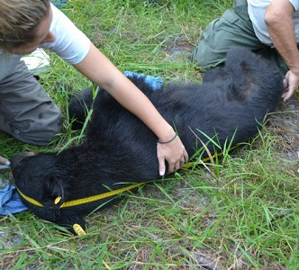
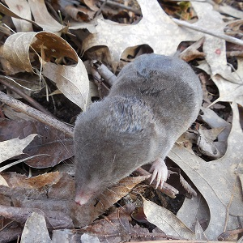
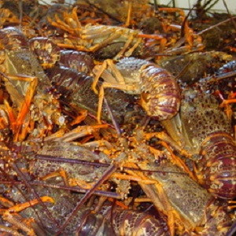

Application Questions
Pollen Counts
 Suppose that it is known that the distribution of the total weed pollen count (spores per cubic meter of air) for LaCrosse, WI on a day in early September is approximately normal with a mean of 40 and a standard deviation of 8. [FYI, pollen count information is available from this site.]
Suppose that it is known that the distribution of the total weed pollen count (spores per cubic meter of air) for LaCrosse, WI on a day in early September is approximately normal with a mean of 40 and a standard deviation of 8. [FYI, pollen count information is available from this site.]
From this, answer the following questions.
- What is an individual?
- What is the variable?
- What type of variable is that?
- What is μ?
- What is σ?
Additionally, for each questions below (a) identify the type of question (e.g., “forward-left”, “reverse-between”) and then (b) answer the question.
- What is the number of pores/m3 such that 10% of the days have higher pore counts?
- What proportion of days in LaCrosse have a weed pollen count less than 50 pores/m3?
- What proportion of days in LaCrosse have a weed pollen count between 32 and 55 pores/m3?
- What is the number of pores/m3 such that 30% of the days have lower pore counts?
- What is the most common 70% of number of pores/m3?
- What proportion of days in LaCrosse have a weed pollen count greater than 35 pores/m3?
Driving Speed
 A police officer in Kansas has recorded the amount of time it takes cars to travel between two points. In a large sample of cars he found the mean time to be 2.5 s with a standard deviation of 0.75 s. Treat these results as if they represent a population and are normally distributed.
A police officer in Kansas has recorded the amount of time it takes cars to travel between two points. In a large sample of cars he found the mean time to be 2.5 s with a standard deviation of 0.75 s. Treat these results as if they represent a population and are normally distributed.
From this, answer the following questions.
- What is an individual?
- What is the variable?
- What type of variable is that?
- What is μ?
- What is σ?
Additionally, for each questions below (a) identify the type of question (e.g., “forward-left”, “reverse-between”) and then (b) answer the question.
- What is the time that identifies the slowest 15% of drivers?
- What proportion of drivers pass through the two points in less than 1 s?
- What proportion of drivers pass through the two points in between 1.5 and 4.5 s?
- What is the IQR for time to pass between the two points?
- What proportion of drivers pass through the two points in more than 7 s?
- What is the median time to pass between the two points?
Turkey Spur Length
 Male wild Turkeys (Meleagris gallopavo) have metatarsal spurs (i.e., bone growths on their feet) that may be used as defensive weapons, but they may also be more attractive for acquiring mates. Spurs grow throughout the turkey’s life and can be a good indicator of the age of a turkey. In one study from Arkansas, the mean spur length in a sample of male turkeys that were more than two years old was 20.9 mm with a standard deviation of 3.7 mm. Assume that these values are true for the population of turkeys and that the distribution of spur lengths is normal. Use this information to answer the questions below.
Male wild Turkeys (Meleagris gallopavo) have metatarsal spurs (i.e., bone growths on their feet) that may be used as defensive weapons, but they may also be more attractive for acquiring mates. Spurs grow throughout the turkey’s life and can be a good indicator of the age of a turkey. In one study from Arkansas, the mean spur length in a sample of male turkeys that were more than two years old was 20.9 mm with a standard deviation of 3.7 mm. Assume that these values are true for the population of turkeys and that the distribution of spur lengths is normal. Use this information to answer the questions below.
- How big is the spur length such that 30% of turkeys have a larger spur?
- What proportion of turkeys have a spur length between 15 and 25 mm?
- What proportion of turkeys have a spur length greater than 30 mm?
- How big is the spur length such that 10% of turkeys have a smaller spur?
- What proportion of turkeys have a spur length less than 18 mm?
- What is the most common 80% of turkey spur lengths?
Age of College Graduates
 The age at which “traditional” students graduate from college is N(22.1, 1.1). Use this information to answer the questions below.
The age at which “traditional” students graduate from college is N(22.1, 1.1). Use this information to answer the questions below.
- What percentage of the students graduate by the age of 21?
- What percentage of the students graduate after age 24?
- What is the age range for the middle 95% of the students?
- What is the age at which 90% of the students have graduated?
Black Bear Size
 We know, from years of study of Black Bears, that the population distributions for head length is N(13.7,1.9), neck girth is N(20.9,4.8), and body length is N(60.0,10). All other variables measured on Black Bears cannot be described by a normal distribution. Use this information to answer the questions below.
- What is the percentage of bears between 45" and 65" in body length?
- What is the neck girth such that 20% of the bears have a larger girth?
- What is the most common 50% of head lengths?
- What is the percentage of bears that weighs more than 200 lbs?
Shrew Brain Weights
 The brain weights of short-tailed shrews (Blarina brevicauda) is normally distributed with a mean of 0.14 grams and a standard deviation of 0.04 grams. Use this information to answer the questions below.
- What percentage of shrews have a brain weight less than 0.09 grams?
- What percentage of shrews have a brain weight between 0.09 and 0.17 grams?
- What is the brain weight such that 30% of all shrews have a larger brain weight?
Bus Arrival Times
The distribution of arrival times for the BART bus at Northland is normally distributed with a mean of 0 and standard deviation of 3, where negative values indicate early arrivals (i.e., before the scheduled time) and positive values indicate late arrivals. Use this information to answer the questions below.
- What percentage of the arrivals are more than 5 minutes late?
- What percentage of the arrivals are more than 4 minutes early?
- What percentage of the arrivals are between 4 minutes early and 4 minutes late?
- What is the arrival time such that 25% of all arrival times are later than that time?
- What are the most common 60% of arrival times?
- What kind of variable is arrival time?
Roe Deer Fawns
 Researchers on Storfosna Is., Norway wanted to examine reproductive habits of roe deer Capreolus capreolus in the northern extremities (Andersen and Linnell 2000). The researchers observed how many fawns were born to each of 149 female, sexually mature roe deer between the years 1991 and 1994. The mean number of fawns from each deer was 2.235 with a standard deviation of 0.460. Use this information to answer the questions below.
Researchers on Storfosna Is., Norway wanted to examine reproductive habits of roe deer Capreolus capreolus in the northern extremities (Andersen and Linnell 2000). The researchers observed how many fawns were born to each of 149 female, sexually mature roe deer between the years 1991 and 1994. The mean number of fawns from each deer was 2.235 with a standard deviation of 0.460. Use this information to answer the questions below.
- What percentage of does have less than 2 fawns.
- What percentage of does have more than 3 fawns.
- What percentage of does have between 1 and 3 fawns.
- What is the number of fawns such that only 7.6% of the does have fewer fawns?
- What is the number of fawns such that only 4.2% of the does have more fawns?
- What is the most common 87% of number of fawns born per doe?
Commercial Crayfishing
 I recently investigated the efficacy of becoming a commercial crayfisherman (crayfish = crawfish = crawdad) on the lake I live on. With carefully constructed samples I concluded that the size of crayfish was N(93,8). The market for crayfish resides in Sweden. Swedes prefer (hence, will only buy) crayfish that are between 90 and 110 mm long (<90 are too small to deal with and >110 taste bad). Use this information to answer the questions below.
- How many acceptably-sized crayfish could I send to market, if I could catch approximately 50,000 crayfish? [HINT: compute the proportion of preferably-sized crayfish first.]
- If I could find an alternative market for the larger (>110) crayfish, how many could I send to it (again assume that I could catch 50,000 crayfish)?